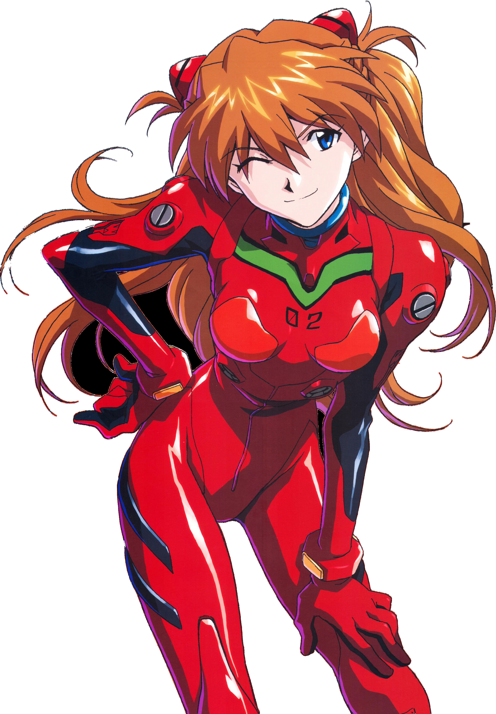

✦ Moonlit Chapter 24
PROLOGUE · 01 / 06
♫ MUSIC
AUTO
SAVE
MENU
A story written just for you

NARRATION
CLICK TO CONTINUE ▸
Happy 24th Birthday, Bader ♡
With love and care,
Mira ♡
RETURN TO THE STARS
A BIRTHDAY VISUAL NOVEL · 18 NOVEMBER 2026
Moonlit
Chapter 24
Every choice tells a story.
Every memory leaves a little light.
Begin your story
A LITTLE UNIVERSE MADE ESPECIALLY FOR BADER
SYSTEM MENU
Take a little pause.
Continue story
Save progress
Restart from the beginning
Back to title screen